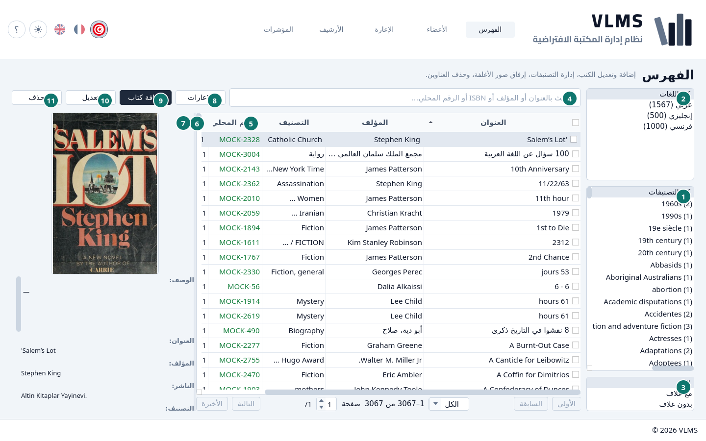
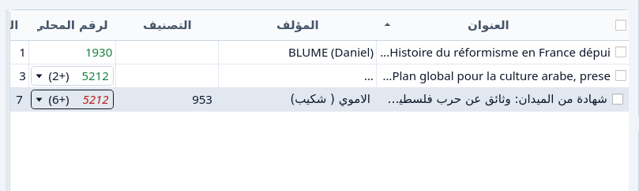
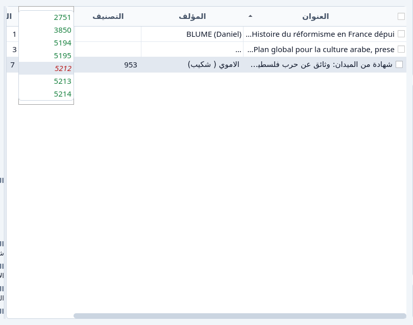
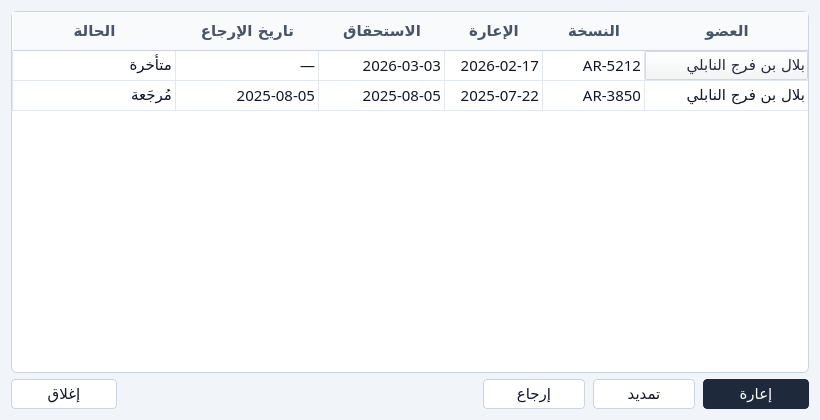

الفهرس
العناوين ونسخها وأرقامها المحلية.
الفهرس قائمة العناوين التي ما زالت في الخدمة. كل سطر عنوان. النسخ في عمود الرقم المحلي وفي التفاصيل.


- التصنيفات. كل التصنيفات يترك كل تصنيف في القائمة. اختر واحداً أو أكثر لتضييقها.
- اللغات. كل اللغات، أو عربي وفرنسي وأي لغة أخرى يحملها الفهرس.
- الغلاف. الكل أو مع غلاف أو بدون غلاف.
- البحث.
- الرقم المحلي. الرقم الذي تتحدث عنه الخلية. انظر الأرقام المحلية.
- النسخ والمتاح. النسخ هي كل نسخة ما زالت في الخدمة. المتاح هو ما بقي على الرف.
- تفاصيل العنوان المظلّل.
- الإعارات
- إضافة كتاب
- تعديل
- حذف
البحث
البحث يتبع العنوان والمؤلف وISBN والرقم المحلي. الرقم المكتوب بأرقام يُبحث عنه مع النص. إن وُجد مطابقاً تماماً، تبقى الأسطر التي تحمله. وإلا انفتحت الأرقام التي تبدأ بهذه الأرقام. الاثنان لا يختلطان.


الرقم المحلي
الخلية تعرض رقماً، أو رقماً يليه عدد بين قوسين إذا كان للعنوان أكثر من نسخة. الضغط يفتح القائمة. اختيار رقم يعلّمه في الخلية. ذلك لا يغيّر ترتيب القائمة، والاختيار يزول حين تُحمَّل القائمة من جديد.


الرقم الأخضر على الرف. الرقم الأحمر المائل خارج. الخط المائل يبقى مقروءاً في الطباعة الرمادية ولمن لا يميّز الأحمر من الأخضر. انظر الأرقام المحلية.

الإعارات
الإعارات تتبع العنوان المظلّل. تفتح حتى إذا لم يُستعر العنوان قط، وتعرض إعارة من هناك. القائمة هي كل إعارة لكل نسخة كانت لهذا العنوان، بما فيها النسخ والإعارات التي أُرشفت بعد ذلك.


إغلاق يغادر النافذة. الإعارة من هنا هي إعارة كتاب. إضافة عنوان هي إضافة كتاب. إزالته هي الإزالة.